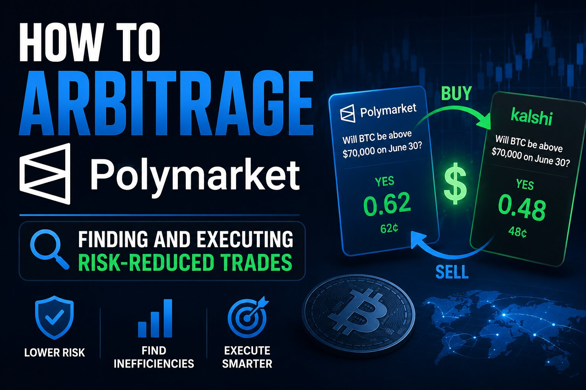

How to Arbitrage Polymarket: Finding and Executing Risk-Reduced Trades

The short answer
"Arbitrage" on Polymarket almost never means the textbook definition — a guaranteed, risk-free profit locked in the instant you place two offsetting trades. In practice it means finding a pricing inefficiency between related outcomes, related markets, or related platforms, and trading it before the gap closes. Some setups get close to true arbitrage; most carry real execution, timing, or resolution risk that only shows up after you've already committed capital.
Same-market arbitrage: when YES and NO don't add up to $1
Every binary market on Polymarket has a YES share and a NO share that should, in theory, sum to exactly $1.00 once you account for fees, since one of them is guaranteed to resolve to $1 and the other to $0. In a liquid, efficiently priced market they trade close to that. In a thin or fast-moving market, you can occasionally buy YES and NO at the same time for a combined price under $1 — say, YES at 46 cents and NO at 51 cents. Whichever side resolves true, you collect $1 per share pair against a cost basis below $1, locking in the spread regardless of outcome. This is the closest thing to genuine arbitrage the platform offers, and it's also the fastest to disappear: bots scan for exactly this gap and close it within seconds in any market with real volume.
Multi-outcome arbitrage: when the parts cost more than the whole
Markets with several mutually exclusive outcomes — "who wins the election," with a separate YES contract for each candidate — should have their YES prices sum to roughly $1 across all candidates, since exactly one of them will win. When the sum drifts meaningfully above $1, it usually means the market is overpricing uncertainty or liquidity is split unevenly across outcomes rather than any one candidate being mispriced. When it drifts notably below $1, buying one share of every outcome locks in a profit no matter who wins, since the total payout is fixed at $1 while the total cost was less. This shows up most often right after a market is created, during a news-driven repricing, or in long-tail markets with few active traders.
Cross-platform arbitrage: Polymarket vs. Kalshi and others
The same real-world event is frequently listed on more than one prediction market at once, and the two platforms rarely price it identically. If Polymarket has "Fed cuts rates in September" trading at 62 cents and Kalshi has the equivalent contract at 55 cents, buying YES on the cheaper venue and NO on the more expensive one — assuming the contract terms genuinely match — can capture the spread. This is structurally the messiest form of arbitrage to execute cleanly: it requires funded accounts on both platforms, contract wording that actually resolves identically (subtle differences in resolution criteria, deadlines, or data sources are common and can turn what looked like a locked spread into two independent bets), and moving capital fast enough that the gap hasn't closed by the time both legs are filled.
Correlated-market arbitrage
Some mispricings aren't between identical contracts but between logically linked ones — a market on "candidate wins the primary" and a separate market on "candidate wins the general election" should move together, since winning the general requires winning the primary first. When their prices imply an inconsistent relationship — the general-election YES trading higher than the primary-win YES, for instance, which isn't logically possible — there's an edge to trade, though it's a directional bet on the relationship converging rather than a locked-in payout, and convergence isn't guaranteed on any particular timeline.
What actually eats the profit
Every one of these setups looks cleaner on paper than in execution. Gas costs on Polygon are small individually but add up across multiple legs and multiple redemptions. Slippage matters more than it looks: the price you see on screen is rarely the price you get once your order works through the order book, especially in the thin markets where these gaps tend to appear in the first place. Timing risk is the biggest one — placing the first leg of a trade and having the price move before the second leg fills turns an arbitrage into a directional bet you didn't intend to make. And on cross-platform trades specifically, withdrawal and transfer times between venues mean capital efficiency is often worse than the raw spread suggests, since money tied up settling one leg isn't available to catch the next opportunity.
Where to actually look
Genuine gaps cluster in a few predictable places: markets in the first hour or two after listing, before liquidity has built up; markets during a fast-moving news event, when prices update faster on one platform than another; low-volume long-tail markets that professional market makers don't bother watching closely; and moments right around resolution, when a market is technically decided but hasn't formally settled yet. Scanning for these by hand across dozens of markets isn't practical at any scale — most people doing this consistently are running scripts against Polymarket's public API to flag mispricings faster than they can be found by eye, and even then, competition for the obvious ones is intense.
Before you treat this as free money
The spreads that remain visible long enough for a person to trade manually are usually small, and by the time fees, slippage, and timing risk are accounted for, a lot of apparent arbitrage opportunities aren't actually profitable once executed. Treat any specific spread as a hypothesis to test with small size first, not a guaranteed return, and double-check that two markets you're pairing genuinely resolve on the same criteria before assuming their prices should converge.
Disclaimer: This post is for informational purposes only and is not financial, legal, or tax advice. Prediction market trading, including arbitrage strategies, carries risk of loss — price gaps can close before both legs of a trade fill, and contracts that look equivalent across platforms may not resolve identically. Fees, market rules, and platform features can change; confirm current details on polymarket.com and any other platform before trading. Consult a tax professional about how gains should be reported.